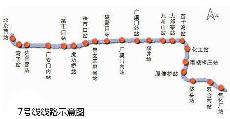
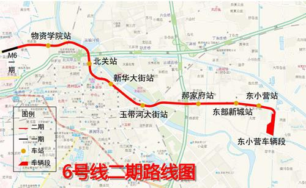
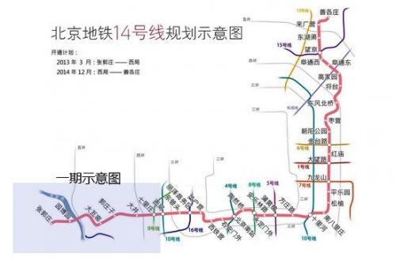

本周六起，北京市地铁、公交将进入冬季运营状态。据北京地铁公司最新消息，地铁7号线、6号线二期和14号线东段将于下月(12月)开通试运营。另外地铁5号线和10号线将适时缩短发车间隔，亦庄线将按计划调整最小行车间隔。公交方面则增开两条商务班车新线及一批微循环线路，确保市民冬季出行。 北京地铁公司表示，今年冬季运输从11月15日到2015年3月15日，历时121天。而且期间新线开通、更新改造以及春运保障等多项重点工作重叠交叉。 另外，北京地铁公司还承担着13号线和八通线安全门系统全功能投入运行等重点工作，冬运压力较为突出。
  
在公交方面，也将开启冬运模式，早晚高峰预计加车3000余车次。根据不同线路客流变化的不同，还将启用新的冬运行车时刻表。同时，还将新开两条商务班车线路及一批微循环线路。
同日，还将有两条新线路上线招募，分别是门头沟石门营紫金路南口至六里桥北里，六里桥北里至门头沟石门营紫金路南口。
公交集团针对客流聚集、道路拥堵严重等问题，展开积极方案应对，将采取多点囤车、绕开堵点、就近中途加入的措施，有效疏散客流。同时在早晚高峰时段的例如六里桥、大望路、三元桥、木樨园、德胜门等30余处客流集散点，配备100部机动车，根据客流情况，随时投入运营。
北京地铁公司表示将采取以下措施保证客流高峰时段的乘客安全和正常运营，
一、加强限流组织。
每月动态评估调整限流车站和客流尖峰时段，及时告知乘客，引导乘客错峰出行。在客流高峰时段继续采取严格的限流措施。
二、完善车辆设备故障追踪体系。
地铁公司将形成完善的车辆设备故障追踪体系，从实名制维修、质量检验、重大故障或缺陷的责任倒查等环节健全维护检修管理制度公司。
三、根据实际情况调整高峰运力。
根据5号线供电改造到位和10号线新车到位情况，同步调整5号线、10号线高峰小时运力。按计划调整亦庄线最小行车间隔，保证网络运力配置均衡。
四、加强车站客运组织。
各运营分公司对受新线客流影响的既有线车站、客流集中的重点车站和换乘车站，逐一修订完善车站客运组织方案和应急预案。